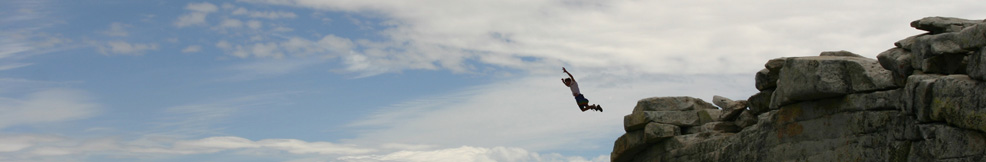

Who We Are?
INNOVATIVE SOLUTIONS, an Organization engaged in manufacturing, providing an unique solution of air purification systems based on Ionisation Technology to combat Stale, recycled, recirculated contaminated Air, Dust, Smoke, Toxic Fumes, unpleasant odours, microbial air contaminants, respiratory health hazards establishing outstanding results in more than 120 very critical diversified application areas in many Industries across the country.
Quality & Customer service are the two basic focus areas of our Organisations. We offer the best quality equipments / systems at most economical price.
We have made our presence felt in the segment of Drugs & Pharmaceutical Industries, Food Processing Industries, Biotechnology, Tissue Culture, Medical & Educational Institutions, Chemical, Process control, Software, Clean rooms, Bio-clean rooms, High Tech priority, Multi Specialty Hospital & Hotels, Electronics space applications etc., wherein the results generated are very satisfactory. This technology is unique, unparallel, ultimate, cost effective, method of air purification in all kinds of enclosed spaces, which is proprietary and tested and established in thousands of applications across the country. We have a very strong, enthusiastic & dedicated team with fully equipped manufacturing and testing facility backed by competent Design Specialists to tackle any kind of Critical/Problematic areas.